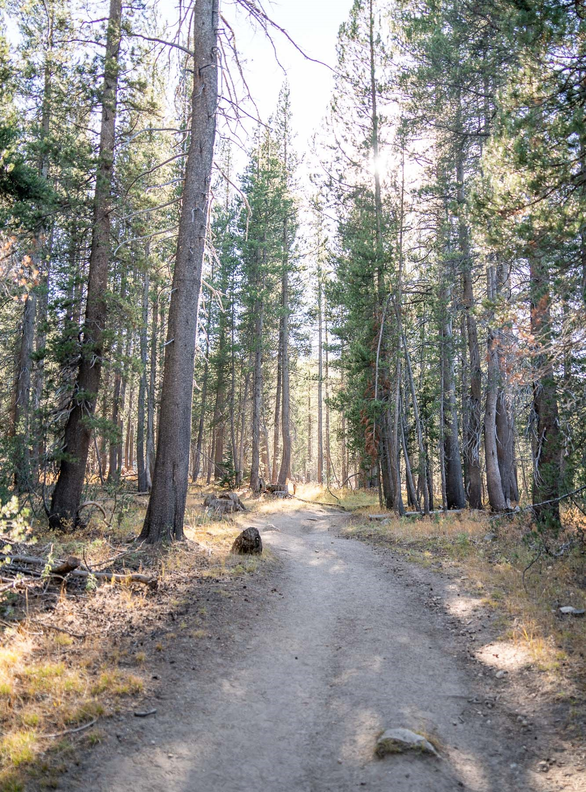
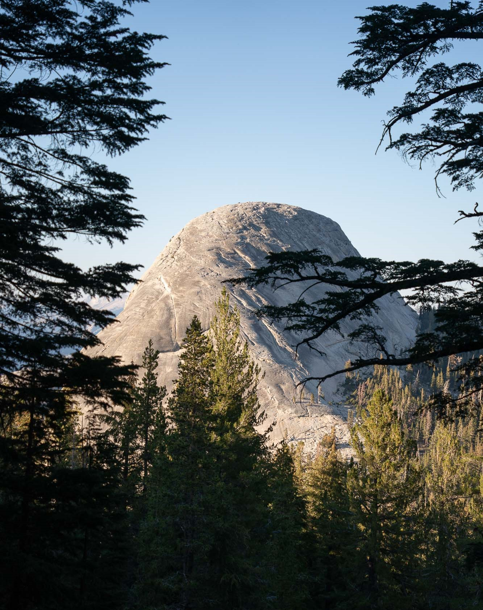
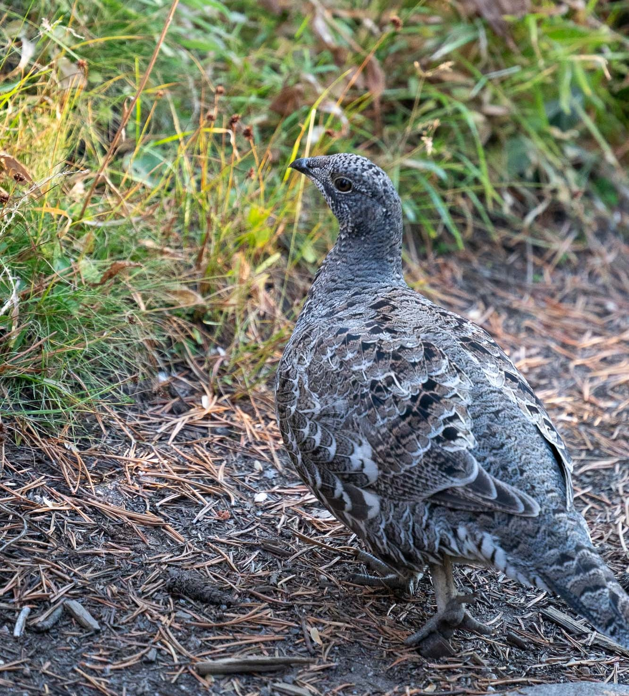
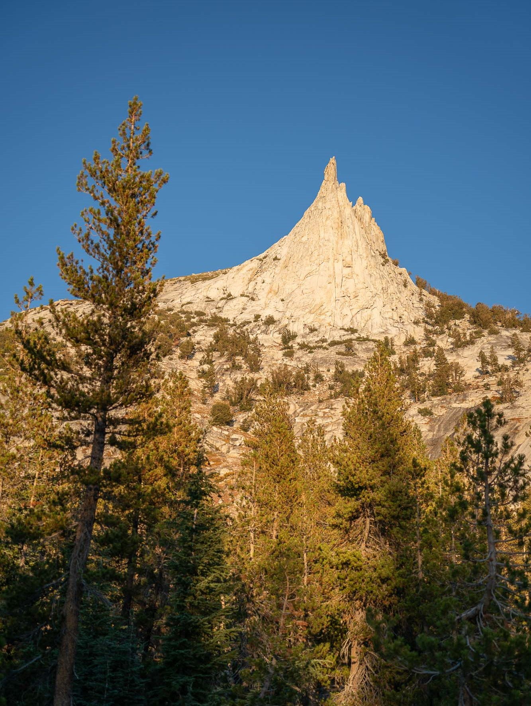
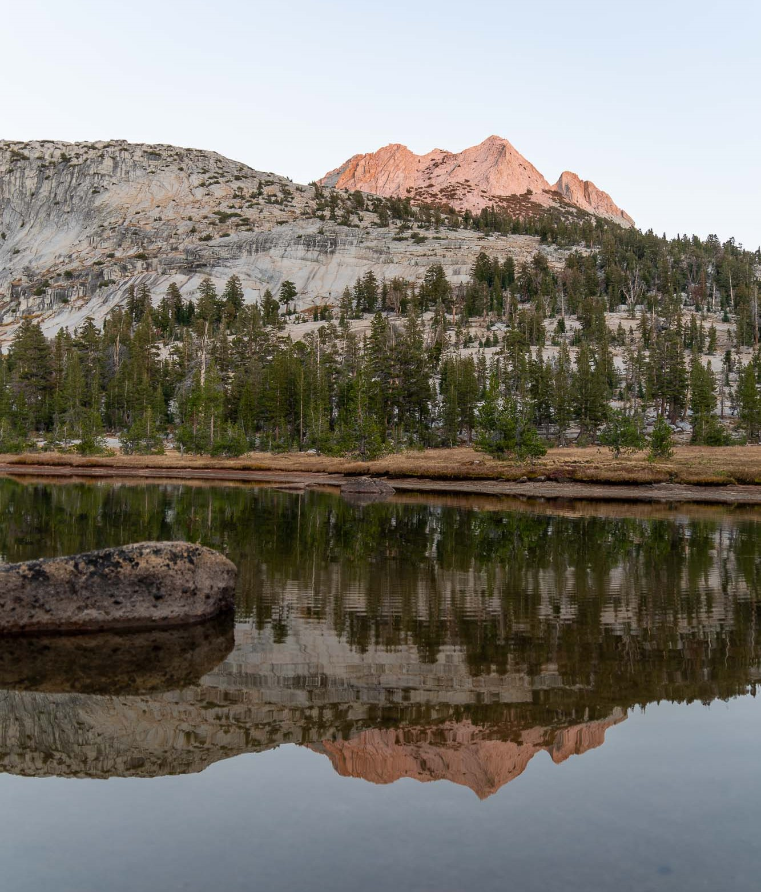
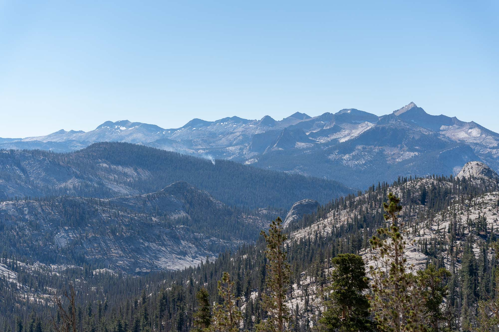

Cathedral Lake and Matthes Lake
My first solo backpacking trip. Since I was recovering from a knee injury from a few weeks ago, I decided to go on a short trip. Cathedral Lake was a dream of mine for so many years, but I never had the opportunity to go. The permits are not so easy to get. But since I was by myself, and it was so late in the season (my latest trip in the Sierra ever), it was not hard to get a permit. It was a great trip, but a little lonely!
I left San Jose around 9 am on Tuesday and got to Tuolumne Meadows at around 3:30 pm. It took me a while to find the wilderness permit office (it has been a while). I was on the trail by around 3:45 pm.
My pack felt a lot heavier than I remembered. It was probably was actually a lot heavier. With nobody to share the load with and some new deluxe sleeping gear (my ultralight days are over), I was probably going at least five or ten pounds over my normal weight.
The climb up to (Upper) Cathedral Lake was very steady and not difficult by normal standards, but I was very out of shape and needed to go very slowly. I tried to keep my heart rate steady so that I wouldn't get altitude sickness. The woods were beautiful and peaceful with the afternoon light streaming through the trees, although the dryness of the air hurt my nose, and the dust was not nice.

{kind=link}
Late afternoon ascent in the woods
{kind=link}
A pretty little meadow

{kind=link}
Fairview Dome through the trees
Sooner or later, when the afternoon light was beginning to fade, the bigger pines started to give way to smaller whitebark pines. I saw some odd birds (what are these?).

{kind=link}
??
I was starting to get very tired, even though I was only three miles in. But I tried to hurry along, so that I could get to the lake before sunset to capture some of the last light on Cathedral Peak.

{kind=link}
Eichorn Pinnacle, I think
Finally, right as the sun was beginning to set, I made it to Upper Cathedral Lake. There is a small use trail that goes off the main trail, and it is not hard to spot if you're paying attention. I was able to snap some shots of the last dying light on the peak reflected in the water:
{kind=link}

{kind=link}
I had a brief chat with another guy who was also taking photos by the lake. After I was satisfied with the photos I had taken, I put down my pack and filled up some water and washed up a little bit in the lake. (No soap obviously.) I didn't bring my water filter because I couldn't find it, so I tried to close my eyes when drinking the water. (Haha. There were definitely some floaty things in there.)
I was disappointed to see one group with a campfire (I don't think this is allowed at Cathedral Lakes despite being within the elevation limit). I found a really great little site after hiking a bit up the hill. It was already dark by 7:30 pm, so I had a lot of time to kill before going to sleep. I had some ramen and was full after just one pack. After twilight, I took some Milky Way photos with my camera (Sony A9 + Tamron 28-200mm f/2.8-5.6). It was a bit hard to set up without a tripod, but I managed. Then I did some reading (The Church by Mark Dever and The Story of Christianity: Volume 1 by Justo Gonzalez). I slept around 12 am.
{kind=link}
{kind=link}

{kind=link}
After a decent night's sleep (I feel like I woke up a few times), I woke up to the sun hitting my tent around 9 am. It was already warming up, so I got out of bed quickly. After brushing my teeth and eating some crackers, I put everything in the bear can, packed some layers, and set off towards Matthes Lake.
As I was plodding along, I looked at the map and started to realize that the distance was quite a bit longer than I expected. (I didn't calculate it at home.) I realized that I would have to walk at a quick pace if I wanted to make it back before sunset. That was annoying. I was hoping to have a relaxed day.
{kind=link}
The meadow atop Cathedral Pass
{kind=link}
Looking back at Cathedral Peak

{kind=link}
Staring off into the distance at what I believe is the Clark Range
{kind=link}
Looking up at Columbia Finger
A pack train passed me while I was taking a break at the bottom of Columbia Finger. It always sucks to get passed by them, because then you know that you'll have to be smelling their fresh poop for the rest of the day.
After Long Meadow, I turned off the JMT towards Cathedral Fork. This part of the trail was nice. I had a nice long rest at the top of the little hill before descending towards Cathedral Fork. On the other side, there were great views of the Matthes Crest.
{kind=link}
Matthes Crest
At around 9160', I decided to set off from the trail and head towards Matthes Lake. The initial stretch was very brushy. I made the mistake of not checking the satellite imagery at home. (Based on the satellite imagery, I think leaving the trail at 9000' is best.) Thankfully, once I started getting closer to Cathedral Fork, the terrain opened up, and there were some nice granite slabs.
{kind=link}
Cathedral Fork itself was almost all dried up, with some pools of water remaining. There were lots of tiny trout that would skitter around whenever they saw me coming. I wonder if this part is easily passible during the early season.
{kind=link}
I followed the leftover stream up until I met the streambed that led up to Matthes Lake. Since the forest around the streambed was so thick, I just walked up the dry, rocky streambed. This was not that easy either, since there were many logs strewn across the streambed that blocked my way. I was kind of cursing myself for not doing my homework on the route to Matthes Lake beforehand. Thankfully, after some time, the streambed finally opened up into some more granite slabs at 9240'. I was so happy to be out of the wood that I practically ran up these slabs. At around 9360', the slabs turned into this tiny little canyon where the stream had cut through the rock. I was a little worried that I wouldn't be able to follow the streambed anymore, but thankfully I was still able to walk on the side.
{kind=link}
From there, I kept following the tiny canyon until the streambed flattened out once again around 9500', after which I cut to the north, where the forest cleared out a little bit, and it was easy to walk through the trees. From there, it was an easy walk to the meadow on the southwest side of Matthes Lake. I was treated some stunning views of the crest, and I spent at least half an hour chilling at the side of the lake.
{kind=link}
{kind=link}
There were some others at the lake, so I waved to them from afar. I ate the last of my goldfish and refilled my water too. Annoyingly, there was a lot of little gunk in the water, and I wasn't able to get a clean-looking bottle of water. I should bring a filter next time.
After a while, I figured I should get going to get back before sunset, so I packed up and headed back. I took approximately the same way back to the trail, although I tried to find an easier way when it got brushy. (I was not successful.) I connected with the trail a little further south than where I left off. I was exhausted by the time I hit the trail again, and my shoes were filled with little spikes from the plants.
I took some long breaks to try and get some energy back. I also ate some Wheat Thins, but the flavor I got was awful. (Only original flavor next time.) After I got my blood sugar back up a bit, I headed back up to Cathedral Lakes. I put in my earbuds and listened to some sermons so that the time would pass a little faster (my legs and feet were killing me by this point).

Mt. Clark (I assume)
I made it back to the lake around half an hour before sunset. I took a little hike up the ridge to the south of the lake to get a nice view of the sunset. I was too tired, so I didn't go very high. (I regret this - my view wasn't the best.) I had some time to kill, so I set up my camera to take a selfie. It definitely took a while to get right!
{kind=link}
That night, I was very disappointed to see a group on the north side of the lake camping right next to the water on the grassy meadow. It's sad to see these people disrepecting the environment so blatantly, especially at these more popular camping sites.
A lot more people were at the lake, and some people were struggling to find a site. I washed off, had some tasty ramen, read my books, and went to bed.
The following morning, I woke up at around 7 am, set off at around 8:30 am, and got to the car by around 11 am. I was dying to eat some Panda Express on the way home, and I indulged myself quite happily. Overall, the trip was nice, and the late season was nice and offered more solitude than usual. However, I wasn't in very good shape and paid for it. Going solo was more lonely, but I was able to have more peace, and the hiking was more relaxing at my own pace. My pack was heavier than usual, but my new sleeping pad was awesome and so comfortable.
5/10 trip overall.